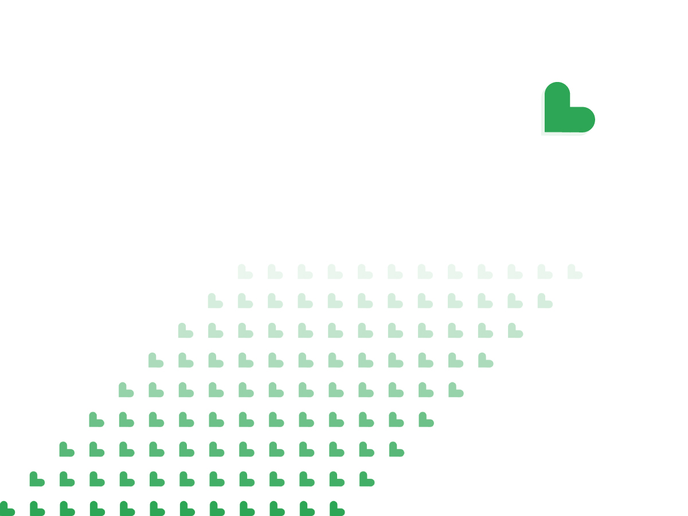

What I did: Brand Identity, Packaging Design, Website Design.
The brief: This was to create a new brand concept. Farma is a Spanish, organic, and nature-friendly pharmacy,
a strong advocate of natural and organic products that have not been tested on animals
and do not contain animal ingredients. producing a wide range of natural skin care products, vitamins, etc..
The solution: Farma is simple, memorable, and closely reflects the activities and commitments of the organization.
Firstly, creating a new brand mark and visual identity, presenting a fresh professional organization offering fresh, plant-based products.
I also designed a new website that’s easy to navigate, informative, and user-friendly.
Finally, closing the branding loop, we cohesive packaging design that follows the brands guidelines.

The outcome: From the name to the identity and colors, Farma is a modern, dynamic brand,
accurately represented as a progressive organisation that inspires, enables and advocates a sustainable and animal free product.